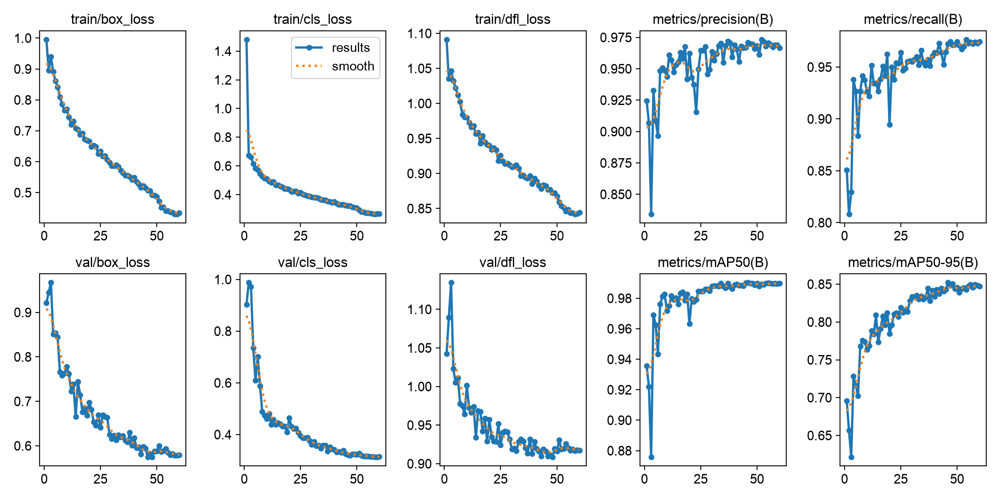
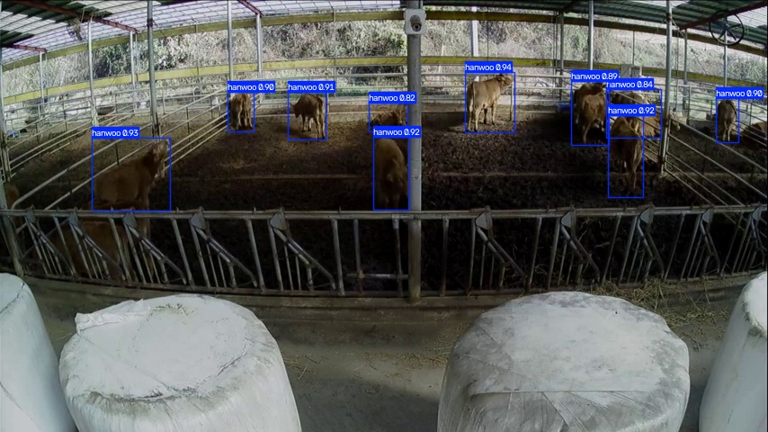

Lesson 05 / 14
YOLO 미세조정 학습과 평가
COCO 로 사전학습된 YOLO11s 가중치에서 출발해, 앞 레슨에서 만든 축사 데이터셋으로 전이학습(transfer learning) 합니다. 처음부터 학습하는 것보다 훨씬 적은 데이터와 시간으로 높은 성능을 얻습니다.
1. 학습 코드
📄 scripts/train.py
"""Student 모델(YOLO11s) 미세조정 학습.
usage: python scripts/train.py --epochs 60
결과: models/hanwoo_yolo11s.pt (runs/hanwoo/train/weights/best.pt 복사본)
"""
import argparse
import shutil
import sys
from pathlib import Path
ROOT = Path(__file__).resolve().parent.parent
sys.path.insert(0, str(ROOT))
def main():
ap = argparse.ArgumentParser()
ap.add_argument("--data", default=str(ROOT / "data/hanwoo_ds/hanwoo.yaml"))
ap.add_argument("--model", default=str(ROOT / "models/yolo11s.pt")) # COCO 사전학습 가중치에서 시작(전이학습)
ap.add_argument("--epochs", type=int, default=60)
ap.add_argument("--imgsz", type=int, default=960)
ap.add_argument("--batch", type=int, default=16)
a = ap.parse_args()
from ultralytics import YOLO
model = YOLO(a.model)
model.train(
data=a.data, epochs=a.epochs, imgsz=a.imgsz, batch=a.batch, device=0, workers=4,
project=str(ROOT / "runs/hanwoo"), name="train", exist_ok=True,
patience=20, cos_lr=True, close_mosaic=10,
# 고정 카메라 축사 영상 특성에 맞춘 증강: 좌우반전 O, 상하반전 X, 밝기(HSV) 변화로 주야간 대응
fliplr=0.5, flipud=0.0, hsv_v=0.4, degrees=0.0, scale=0.4, mosaic=1.0, mixup=0.0,
plots=True,
)
best = ROOT / "runs/hanwoo/train/weights/best.pt"
dst = ROOT / "models/hanwoo_yolo11s.pt"
shutil.copy(best, dst)
print("saved:", dst)
metrics = YOLO(str(dst)).val(data=a.data, imgsz=a.imgsz, device=0, plots=False)
print("val mAP50:", metrics.box.map50, "mAP50-95:", metrics.box.map)
if __name__ == "__main__":
main()주요 하이퍼파라미터
| 파라미터 | 값 | 이유 |
|---|---|---|
imgsz | 960 | 원거리의 작은 소를 위해 기본값(640)보다 크게 |
epochs / patience | 60 / 20 | 검증 성능이 20 epoch 동안 오르지 않으면 조기 종료 |
cos_lr | True | 학습률을 코사인 곡선으로 서서히 감소 → 안정적 수렴 |
mosaic / close_mosaic | 1.0 / 10 | 4장을 이어붙이는 증강으로 다양한 배치 학습, 마지막 10 epoch 는 실제 이미지로 마무리 |
flipud | 0 | 고정 카메라에서 상하가 뒤집힌 소는 나올 수 없음 |
hsv_v | 0.4 | 계절·시간대에 따른 밝기 변화 대응 |
2. 실행
python scripts/train.py --epochs 60 --imgsz 960 --batch 16TITAN RTX 기준 epoch 당 약 75초. 학습 결과는 runs/hanwoo/train/ 에 저장되고, 최고 성능 가중치가 models/hanwoo_yolo11s.pt 로 복사됩니다.
3. 결과 (검증셋: 학습에 쓰지 않은 cow02, cow09)
학습 epoch60
best epoch46
Precision0.971
Recall0.972
mAP500.990
mAP50-950.852

지표 읽는 법
- Precision(정밀도): 모델이 소라고 한 것 중 진짜 소의 비율 — 낮으면 오검출이 많음
- Recall(재현율): 진짜 소 중 모델이 찾은 비율 — 낮으면 놓치는 소가 많음 → 추적이 끊김
- mAP50: 박스가 정답과 50% 이상 겹치면 정답으로 볼 때의 평균 정밀도
- mAP50-95: 겹침 기준을 50~95% 로 엄격하게 올려가며 평균 — 박스 위치 정확도까지 반영
4. 학습 전후 비교 (같은 YOLO11s)


주의: 검증 라벨도 teacher 가 만든 자동 라벨이므로, 위 점수는 “student 가 teacher 를 얼마나 잘 따라 하는가” 입니다. 사람이 검수한 라벨로 평가하면 점수가 다소 낮게 나올 수 있습니다. 그래도 student 는 teacher 보다 수십 배 빠르면서 곤포 오검출이 없고, 이것이 추적 품질로 이어집니다.